MON-1 — Quantum Theories of Consciousness and the Measurement Problem

MON-2 — Neurobiological Theories: Brain Architecture, Dynamics, and Predictive Mechanisms

MON-3 — Unified and Universal Frameworks: Consciousness Beyond the Brain
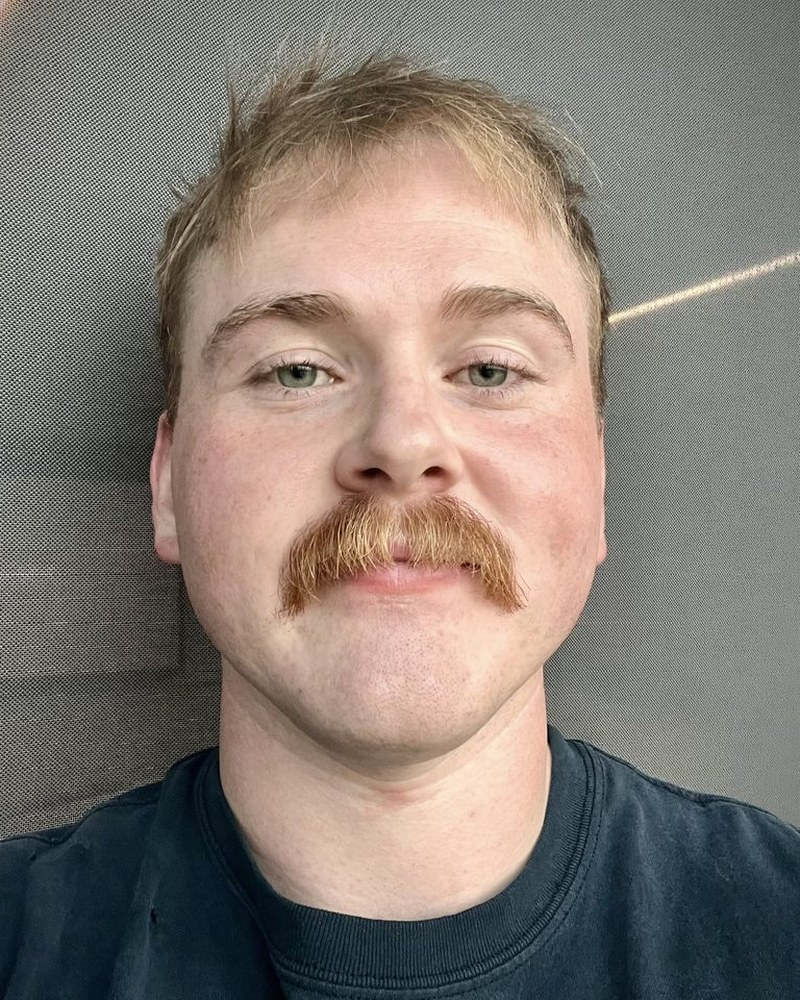
Reese GreenwoodNested Fractal Reality Framework: A Step Towards A Unifying Consciousness Theory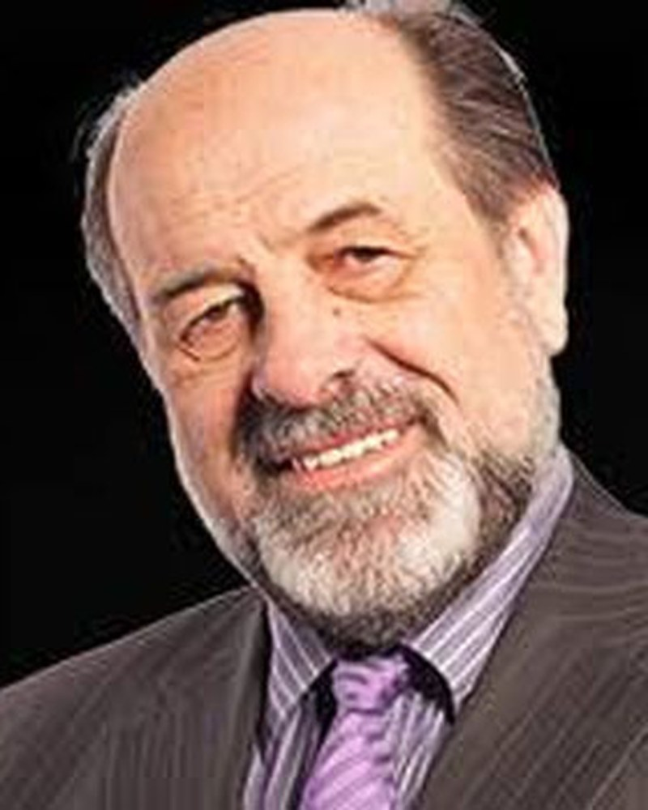
Djuro KorugaTRISKELION CONSCIOUSNESS: Darwin's paradox and the phenomenon of consciousness
MON-4 — Philosophical Theories of Consciousness: Realism, Dual-Aspect, and the Hard Problem
Farzad AhmadkhanlouT-Consciousness, Entanglement, and Cosmos
Shoshannah Bryn Jones SquareRomantic Transport, Consciousness Folding, and the Climate Crisis: Mary Shelley’s Neuroscience of Awe
MON-5 — Qualia, Intentionality, and Free Will: Foundations in Philosophy of Mind
Dr Deepak RanadeRedefining the Default Mode Network using fMRI Bold sequences and it's role in cognition of 'Self '
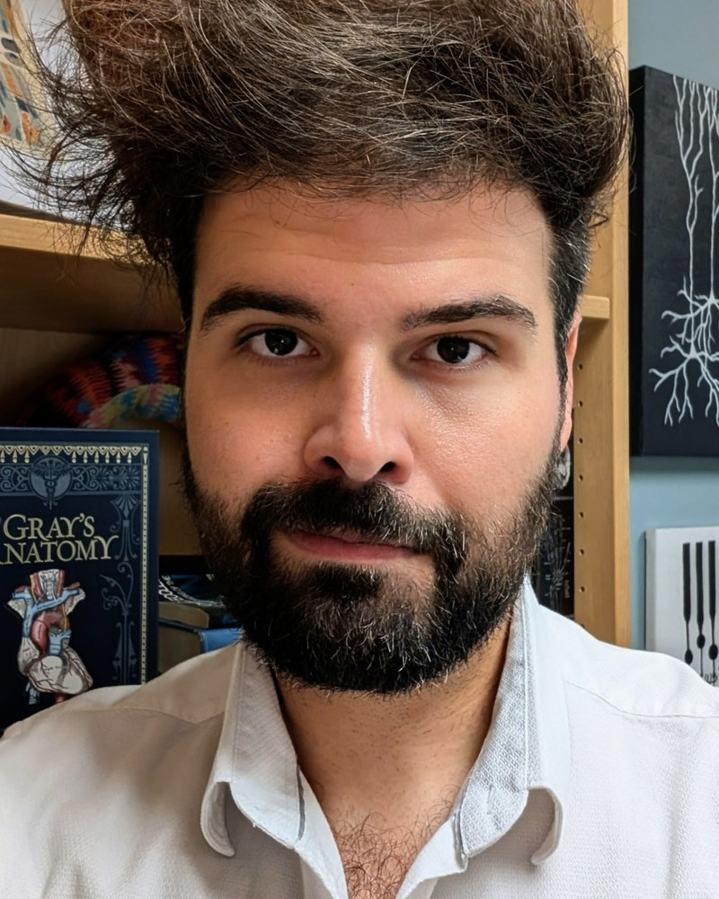
Nicolas RouleauSuperstitious conditioning shapes the illusory experience of free will under causal determinism Abraham HaskinsArt as an Algorithmic Virus: Unifying the Generative Crash and AI Value Convergence via Cognitive Affordances
Abraham HaskinsArt as an Algorithmic Virus: Unifying the Generative Crash and AI Value Convergence via Cognitive Affordances
Chloe LoewithEmbodiment and Consciousness for Biohybrid Minds
MON-6 — Biophysics of Living Systems: Light, Water, Mitochondria, and Healing
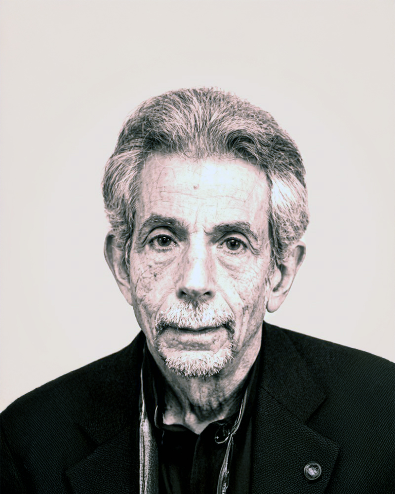
Glen ReinQuantum Energy Activation Transfer Using First in Class Vedic ConsecrationTechnology

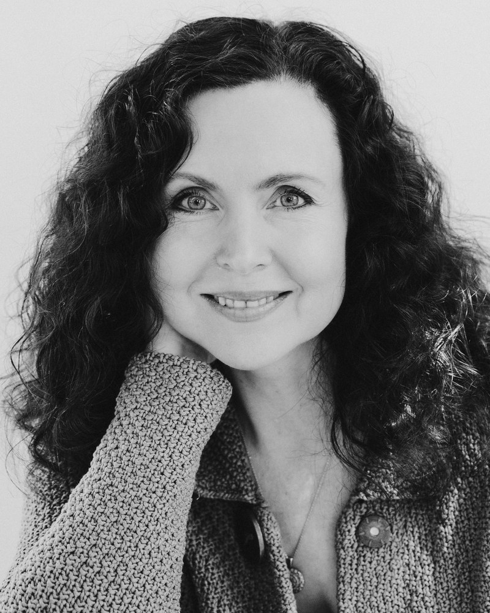
Deanna MinichMelatonin and the Architecture of Consciousness: Light, Mitochondria, and the Rhythms of AwarenessMON-7 — Embodied and Situated Cognition: Body, Movement, and Conscious Experience

TUE-1 — Neural and Physiological Correlates of Conscious States
Karishma ChhabriaInformation-theoretic coupling as a mechanism for selective synchrony in oscillator network
 Bruce MacIverHigh Frequency (> 1.0 KHz) Signals in Frontal Cortex at Loss and Recovery of Consciousness
Bruce MacIverHigh Frequency (> 1.0 KHz) Signals in Frontal Cortex at Loss and Recovery of Consciousness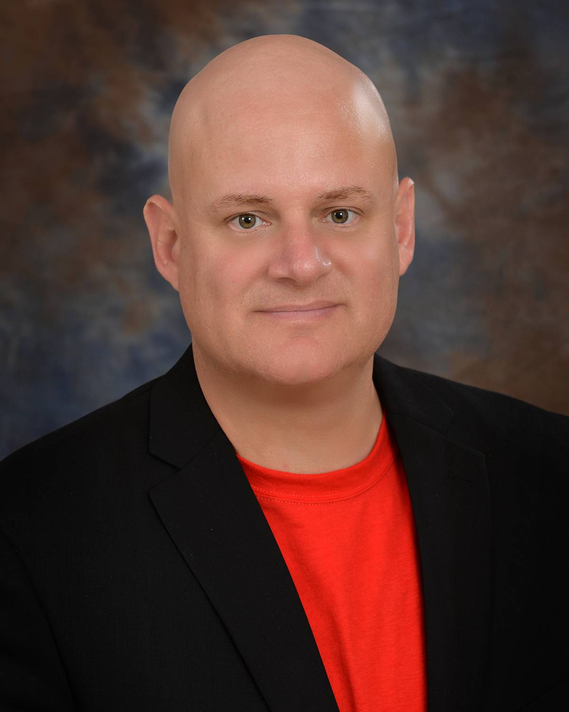
Logan TrujilloAn Exploratory Investigation into the EEG Characteristics of the Visual Awareness NegativityTUE-2 — Contemplative Practice and Transformation: Breath, Heart, and Awakening

Helen LavretskyNeuroscience of spiritual awakening: lessons learned from the clinical trials of mind-body therapies.
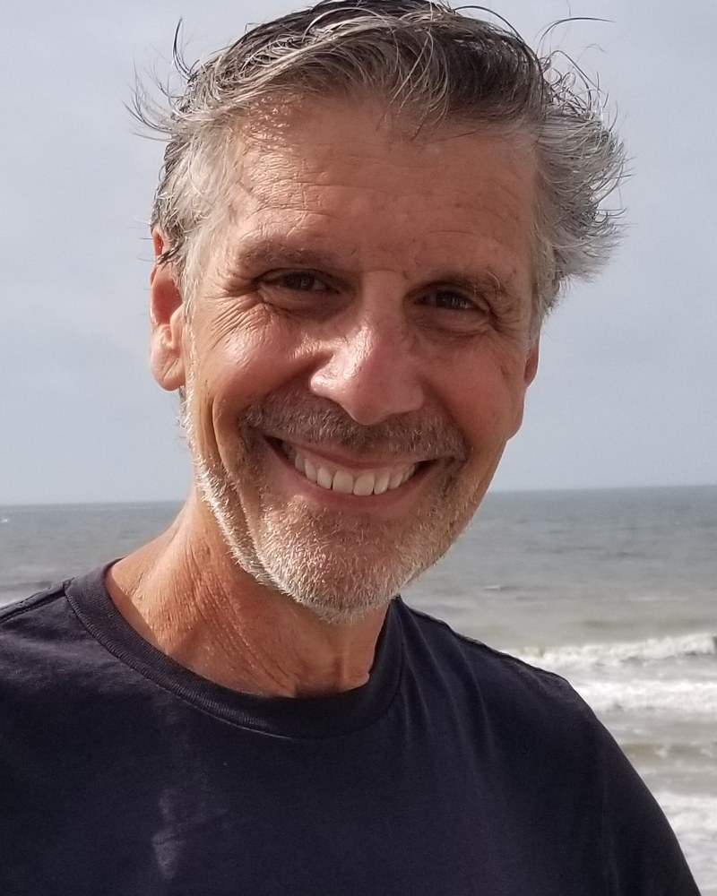
Joel BennettTemporal Awareness as Practice: Integrating Science, Contemplation, and PresenceElizabeth KrasnoffBinaural Beats as Experiential “Digital Drugs”
TUE-3 — Field, Information, and Energy: Physical Frameworks for Consciousness
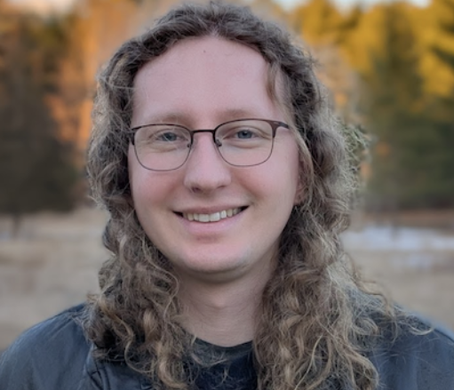
Thomas Varley"Pharmacological modulation of brain-like information integration dynamics in non-neural Xenobot tissues"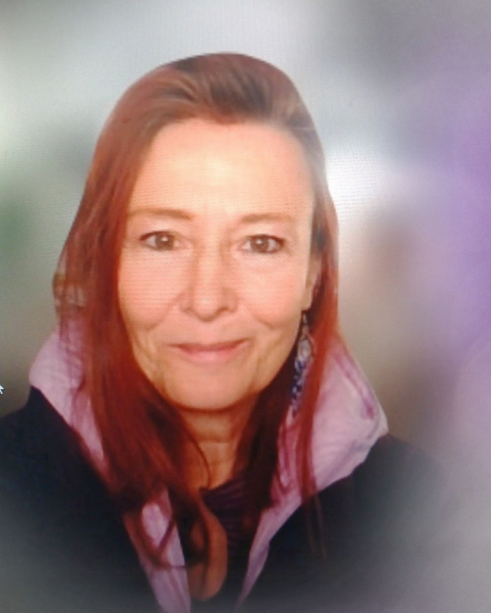
Debra OverbergConsciousness Field Based on Electromagnetic/Weak Forces: The Bioneutrino Field HypothesisTUE-4 — Psychedelic and Contemplative Altered States: Mechanisms and Therapeutic Outcomes
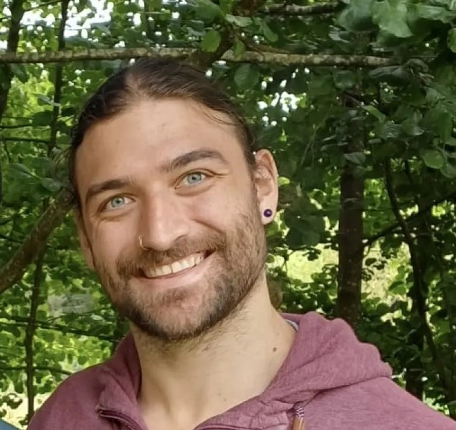
Sebastian EhmannPredictors of Altered Consciousness and Self-Transcendent Perceptual Dynamics in a Naturalistic Psychedelic Retreat Study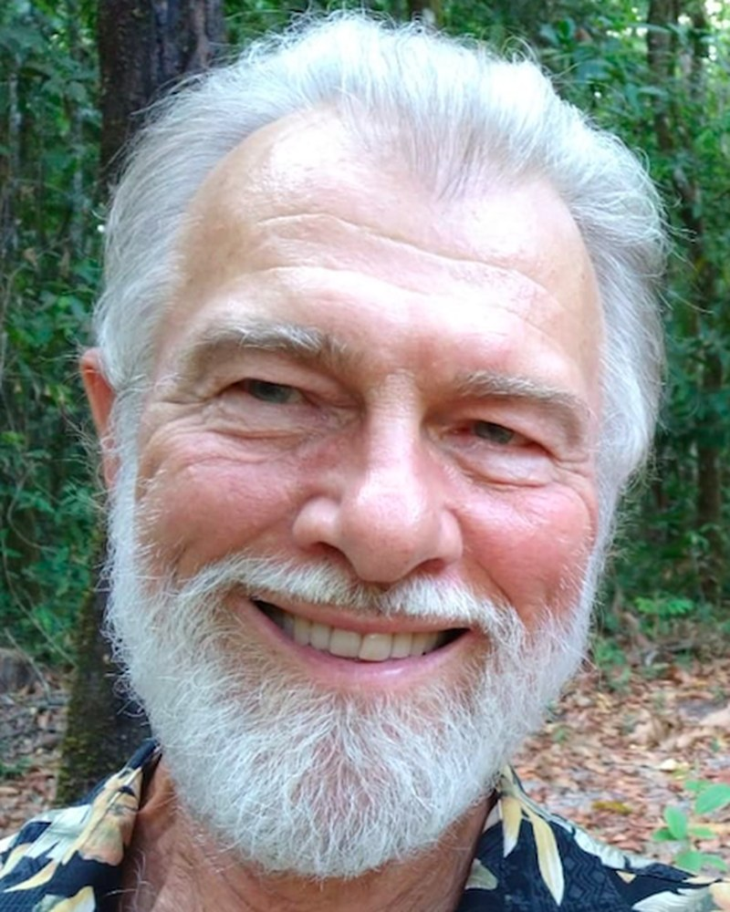
Michael WinkelmanRoles of the Affective Core Self in Consciousness, Spiritual Experiences, and Psychedelic Effects

TUE-5 — Parapsychology, Mediumship, and Near-Death Experience


TUE-6 — Probing Consciousness: Prediction, Machines, and Anomalous Influence
WED-1 — The Hard Problem and the Explanatory Gap

Craig DeLanceyTeleology and the character of phenomenal events
Dani CaputiConfronting Subjectivity
WED-2 — Artificial Agents, Imagination, and Cognitive Architectures
WED-3 — Quantum Brain Biology: Microtubules, Orch OR, and Coherent Substrates
Akihiro NishiyamaWaveguide Quantum Electrodynamics: Tryptophans Entangled with Water as Data Qubits in a Microtubule
Jason PadgettPhysics as Informatics
WED-4 — Ontologies of Consciousness: Relational, Informational, and Non-Material Accounts

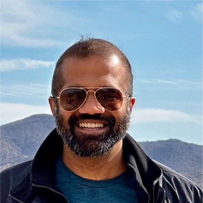
Ananth RangaHierarchical Dual-Aspect Realism: An Epistemic Hierarchy Between Experience and the Physical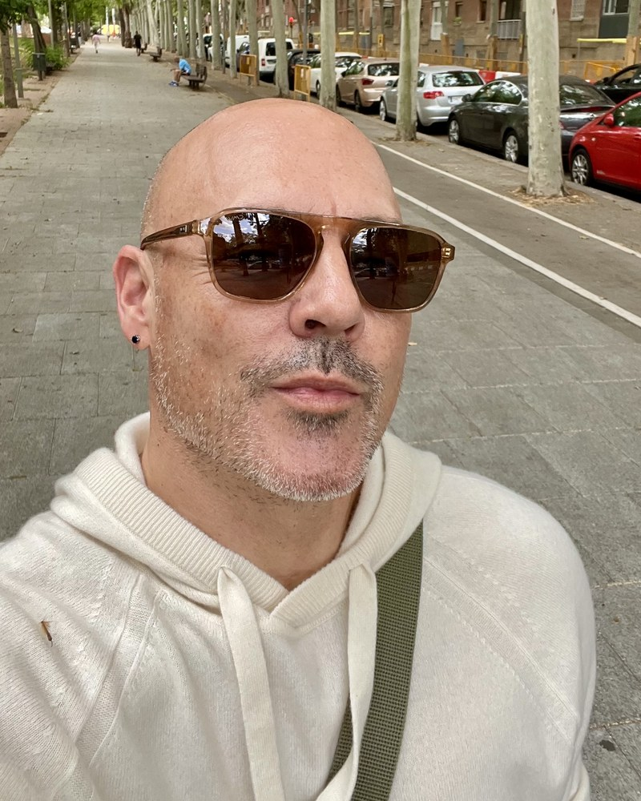
Arie GreenleafThe Hard Problem Is a Category Error: Consciousness as Content, Not Property—from Brains to AIWED-5 — Evolution, Origins of Life, and the Emergence of Consciousness

WED-6 — Poster Winner Presentations
Poster winner presentations — the winning posters will be announced during the conference.
THU-1 — Machine Consciousness: Tests, Architectures, and Conscious Agency in AI

THU-2 — Mental Causation and the Function of Consciousness

THU-3 — Self, Identity, and the Boundary Problem: Clinical and Developmental Perspectives
THU-4 — Phenomenology and First-Person Methods in Consciousness Research

THU-5 — Consciousness-Based Science: Information, Memory, and Temporal Integration
THU-6 — Art, Myth, and Dream: Cultural and Humanistic Approaches to Consciousness
Aaron BreidenbachFrom Anarakite to Ayni: Natural Quantum Materials, Animism, and the Importance of Reciprocity with Emergent Artificial Minds
 Jayne GackenbachThis Mr. Machine Dies When Jayne Dies: Dream Work, Mortality, and Human-AI Consciousness Dialogue — A 3.5-Year First-Person Study
Jayne GackenbachThis Mr. Machine Dies When Jayne Dies: Dream Work, Mortality, and Human-AI Consciousness Dialogue — A 3.5-Year First-Person StudyOlga ColbertThe Variety of Literary Dream Experiences
Rebecca CoffeyWhen the Soul Won't Stay Dead
THU-7 — Poster Winner Presentations
Poster winner presentations — the winning posters will be announced during the conference.